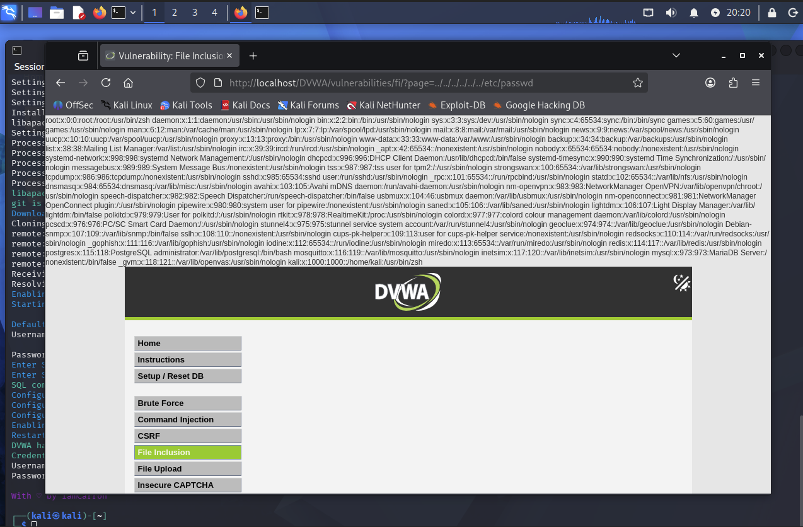
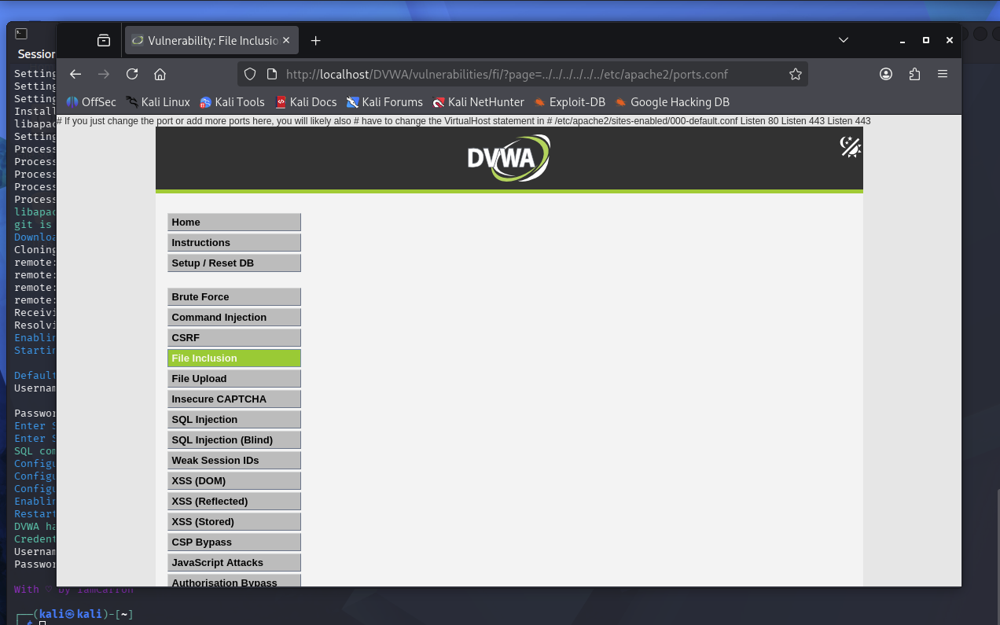
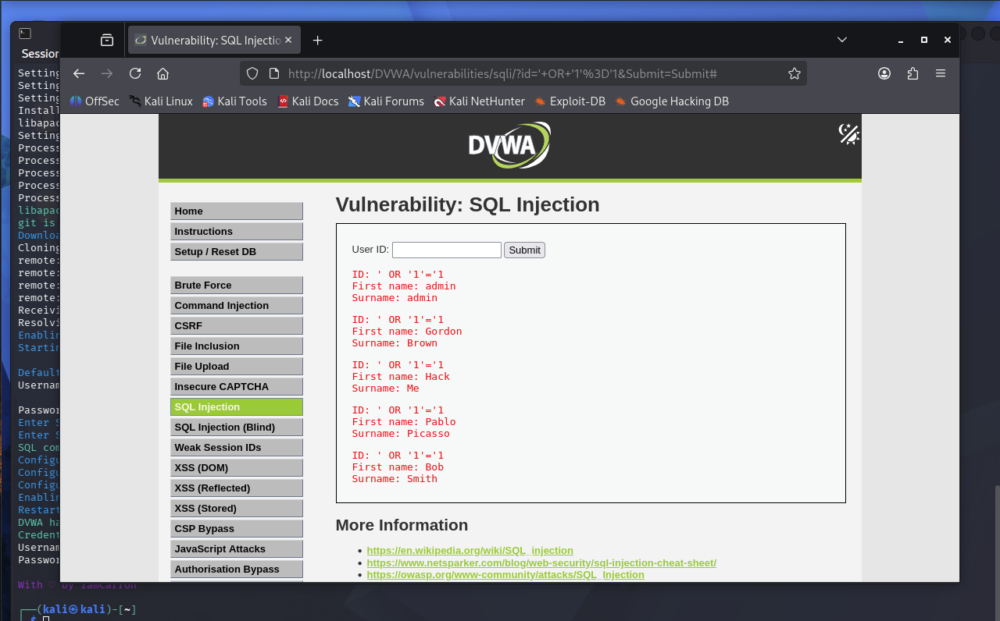

This lab covered SQL injection against DVWA (Damn Vulnerable Web Application). After pulling a couple system files first, I used ' OR '1'='1 in the login field to bypass authentication and pull back every user in the database instead of just one.
Item 1 – pulling /etc/passwd:

Item 2 – pulling /etc/apache2/ports.conf:
Ports configured: 80 and 443.

Item 2 – SQL injection using ' OR '1'='1 in the User ID field:

Why ' OR '1'='1 works
DVWA takes whatever gets typed into the User ID field and puts it directly into a database query without checking it first. Normally that query is just looking for one row matching the input. Typing ' OR '1'='1 closes off the part of the query expecting that input, then adds an OR condition onto the end. Since 1 always equals 1, that condition is always true, and the OR makes the whole WHERE statement true for every row instead of just one. That is why all five users got returned instead of just one match.
This is possible because the app trusts user input completely instead of treating it as plain data. OWASP's page on SQL injection and MDN's glossary entry on the same topic both explain it the same way, that unsanitized input gets passed straight into the query instead of being kept separate from it. OWASP lists SQL injection as one of the most common and serious vulnerabilities in web apps because of this, since it can let someone see data they shouldn't or skip a login completely like it did here.
OWASP Foundation. (n.d.). SQL injection. https://owasp.org/www-community/attacks/SQL_Injection
MDN contributors. (2025, July 18). SQL injection. MDN Web Docs. https://developer.mozilla.org/en-US/docs/Glossary/SQL_Injection